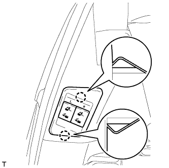

ПЕРЕКЛЮЧАТЕЛЬ ЭЛЕКТРОПРИВОДА СИДЕНЬЯ (левого заднего) > УСТАНОВКА |
| 1. УСТАНОВИТЕ ПЕРЕКЛЮЧАТЕЛЬ СКЛАДЫВАНИЯ СИДЕНЬЯ № 2 В СБОРЕ |
Подсоедините разъем.
|  |
Введите в зацепление 2 захвата, чтобы установить переключатель складывания сиденья.
| 2. ПРОВЕРЬТЕ ЗАДНЕЕ СИДЕНЬЕ № 2 |
Проверьте работу электропривода сиденья (Нажмите здесь).